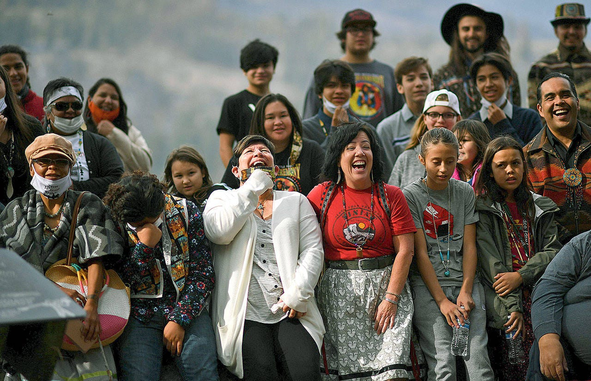
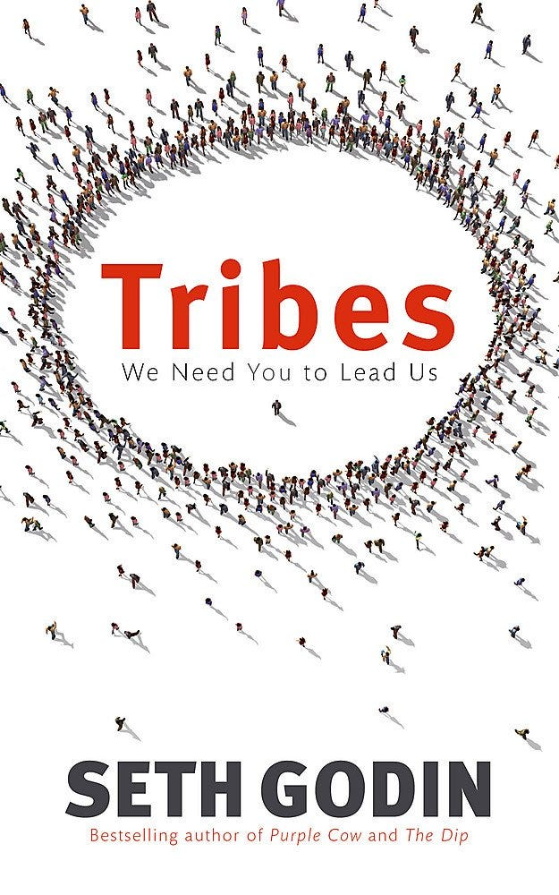

The middle tribes' era


In this past article, I told that we were living into the middlemen business era and now while I am writing this article I promised it happened to me to write down middlemen by explaining some pasts financial events. My mind reminded me of this error I made by calling this era like that because I would be excluding women who were and are still into all the goods things that we got now with computers like the Internet. I can give Ada grace or ….tlike example and I was really caring about them days before while working on these ideas I seek to do to remind people of the roles of women in tech, in this world I have no idea let’s be clear about that. So I just got this instinct that tells me that the correct term is middle tribes business era because whatever we can say or whatever we can do it is all about tribes. Groups of people with the same goals and the same point of view, trying to do together and to have bigger impacts. The ones who are able to create and organize efficiently such tribes are called leaders but tribes can be born and thrive without leaders and it now happens often and often because of the progress we have made in technology. it was already studied and discovered that a message just needs 7 nodes to travel around the world with the word of mouth for medium. Internet translated our mouth to our fingers and hands because with keyboard, clicks, and touch in microsecond our message spread worldwide. That’s how it is called the world wide web.
Hope my friend will forgive me I will talk to these persons that lost money because the exit strategy was not planned and carefully executed for all of them to benefit from. That’s the single element that disqualifies this group of people that crowd invested the market for being a tribe because in a tribe everybody benefits from the crowd’s behavior, it should exist among the tribe’s members no claims and pains resulting from the past actions they did. in the case of this wallstreetbet’s group there was no exit strategy defined but those who were at the front of the movement had a long term goal — leading the board of Gamestop — while the Robinhood traders who were investing their money were willing to get a short term benefit.
Here we have a great example of the leveraging of the power of a middle tribe because we have a group of people who succeed at creating a tribe between a company — Gamestop- and the public opinion (individual investor) and using this middle tribe for driving the stock of this company.
The internet is an aggregation of micro media that ease the creation of tribes whose members can be geographically dispersed among different sides of the world. If these tribes succeed at being an alternative power between two or more other tribes that have interest-driven relationships, this created tribe is what I call a middle tribe and this is the most powerful form of tribes because, like Amazon, it becomes a marketplace that has the power of filtering and promoting ideas like investing in a given stock.
Middle tribes are connectors and have the power of shaping culture because of the power that they have for deciding what will flow from this tribe A to this tribe B that it connects. The connected world we are living in now is a world where middle tribes are the winners like the middleware systems are in systems. Pieces of connections between entities, bridges between two worlds are what describe middle tribes.
To understand better what a middle tribe is, it can be helpful to this book below because it certainly fuelled this article I am writing.

I used to say middleman for describing someone who connects two persons, sectors, businesses, or anything but writing about women in tech helped me see that this name is flawed because of the word man. Middleperson is best at describing people like that and I will be probably writing an article title MiddlePerson because these kinds of persons like the middle tribes are those who will thrive in this connected world.